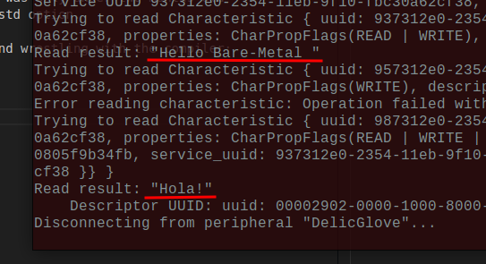
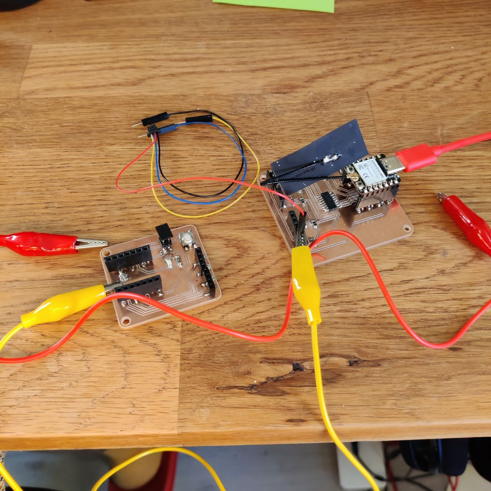
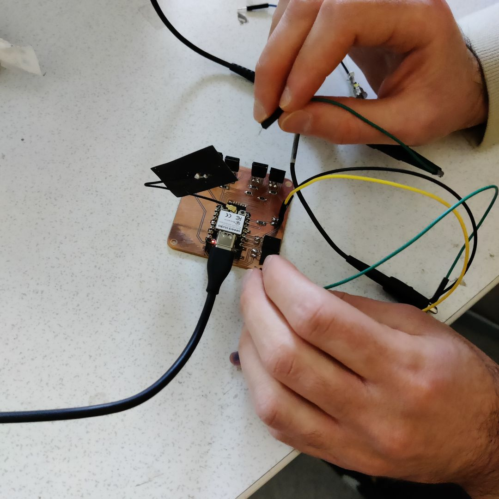
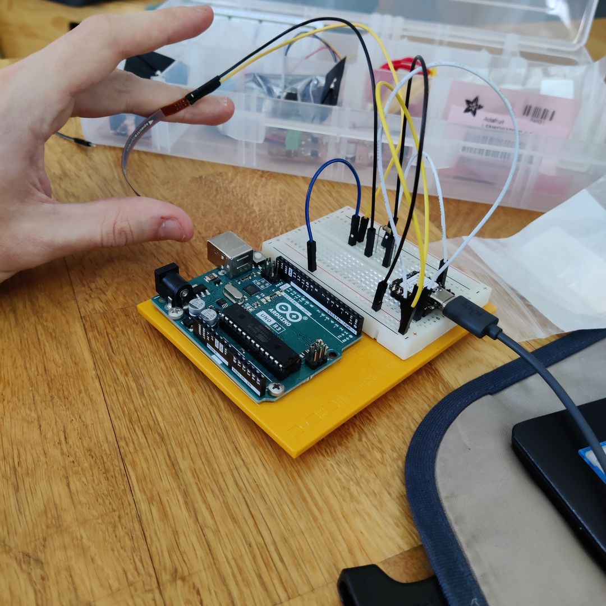

Table of Contents
Assignment
Group assignment
* Join one of the introduction sessions.
* Elect a group leader.
* Document hands-on exercise with available interface examples.
* Optionally discuss an additional example that you have used in the past or wish to explore.
Individual assignment
* Link to the group assignment page.
* Describe what you learned from the group assignment on your documentation page briefly.
* Write an application that interfaces a user with an input and/or output device that you made.
* Include a hero video and source files of the application in your documentation.Group
Group assignment this week was handled by Miro Keimiöniemi (link pending)
Concept
The agenda for this week was to set up the initial working version of the debug app for my final project, the gloves.
I chose the Rust based Bevy game engine for this project. Using it feels more like using a framework than an engine, really, since there’s no standalone editor or other executable that you run to make things. Instead, you add it as a dependency like any other crate in your project. If using a game engine sounds like overkill for a simple app, you can pick and choose only the features your project needs, making it potentially quite lightweight.
To use this engine, you of course would need Rust installed on your machine. I’m using the Rustup tool to manage Rust installations.
Then you would be best served by following along with the Bevy book. Create a rust project, add Bevy as a dependency, and then add Bevy’s recommended optimisations to the cargo.toml file. It’s all explained in the book.
I’ve used Bevy before, but never anything async or with networking. Those aspects would be new to me and useful for my future projects using the engine.
For the code going into the ESP32, I first thought I’d be following the tutorials mentioned in the previous assignment post. The ESP32 was going to be here, at first, an unsecure BLE server.. There were however some compiler issues that I was unable to solve at first. So in the interest of time I opted for Bleps, which I did manage to get working sooner.
For the code going into the Bevy app, I need two things. First, a library to handle connecting to bluetooth devices. The one I found and got working was btleplug. Since that crate seemed to heavily use async, I also needed bevy-tokio-tasks to provide better async support for Bevy. That crate was somewhat old but it was relatively trivial to update to work with the latest version of Bevy.
Process
There was a lot of frustration while getting these things to work. I didn’t document all the struggles with the compiler, as there’s way too many individual stumbling blocks there to effectively list here. Things to do with choosing the correct compilation targets, reconciling incompatible dependencies between examples found online etc. Instead I’ll start with the debugging I did with the bluetooth connection, and then the multiplexer. Final working code will be appended at the end of this post once it is, well, working.
BLE
BLE = Bluetooth Low Energy.
Once the Bevy app and embedded program were up, I tried getting them to connect to each other. Eventually, it was successful, and I was able to send some hard-coded messages from the ESP32 to the Bevy app via bluetooth.
The connection was highly unreliable, and I didn’t know why. There were issues with timeouts and local connection aborts that I didn’t know how to debug. So let’s attempt to make sense of some of them.
Starting scan on hci0 (usb:v1D6Bp0246d0540)...
Peripheral "Ruka" is connected: false
Connecting to peripheral "Ruka"...
Error connecting to peripheral, skipping: Service discovery timed outService discovery timed out.
(WIP)
MUX
This was the first time I tried programming the input board. I was behind on that assignment and getting the physical board finished, so I didn’t have time to test it until this week. And when testing, it seemed there were problems with the multiplexer.
I wasn’t at the lab when I encountered all these issues, so I had to improvise a bit with the debugging. The input board didn’t have an LED, but my previously designed board did. I connected the two boards with alligator clips and poked around to see which pins and traces were being powered and which weren’t.
For reference, here is the PCB footprint of the board. I was mostly testing the thumb flex sensor connected to sockets labeled J1. I had a piece of code that read the value on the analog pin, which was connected to the multiplexer. At one point I cycled through all the possible selector values and read the output from all of the multiplexer pins, and none of them were reacting to the flex sensor.
The intended circuit was that the power is first drawn from the 5V pin, lead through the R1 resistor, then the flex sensor at J1 (which is a variable resistor, essentially) and then to ground. The route to the multiplexer pin A4 in the corner of the mux starts from between the two resistors. My understanding is that which resistor is on the power side and which on the ground side doesn’t really matter, since I’ve seen sources with both setups.
I later learned that this type of circuit is called a voltage divider.
The first issue was quickly found and easily fixed. I had selected the wrong pins to be the selector pins for the multiplexer. I only noticed when I connected a pin that wasn’t being used at all to the LED, and it lit up. It was being used as one of the selectors. Unfortunately, switching to the correct selector pins wasn’t enough to fix the issue.
The second thing I checked was whether there was power coming out of the flex sensor circuit. There wasn’t, at least not enough to turn on the LED. There was power going into the resistor R1, lighting up the LED brightly. The trace after the resistor lit it up dimly, and the trace after the flex sensor, not at all. So one hypothesis for what could be wrong is that the resistance is too much and there isn’t anything left for the analog pin to measure. The resistor is 47k0hms, a value that was recommended by this source for example. This video has the order of resistors flipped, and an even higher Ohm resistor. It seemed unlikely that this was the issue, but I couldn’t rule it out just yet.
The multiplexer has a pin labeled !E, which is the enable pin. When that pin is powered, the entire multiplexer is off. So it should be unpowered for the circuit to work. I had connected that pin, as well as the Ground and Negative Power pins all to ground.
Finally I tried to measure the com pin on the multiplexer to see if it could output any power.
This was all desperate work, and in hindsight I don’t think I understood how the multiplexer should be debugged. Back at the lab I got help, and we went to the oscilloscope to properly look at the voltages.
Yeah. Turned out the circuits were fine. There was a 2V difference in the voltage of the analog pin when the flex sensor was bent. So the problem had to be in the software.
I tried for several more hours to get the analog reading to work. No matter what library I tried or what function, something somewhere broke. I couldn’t get the libraries to compiler, or the correct features enabled. So I gave up on using Rust for this. The ecosystem was far too immature in the end, and I don’t have even close to the required programming knowledge to compensate.
Arduino
I went back to Arduino. I expected to be able to immediately utilise out-of-the-box solutions for the BLE and analog pins. But of course there were issues.
First issue turned out insurmountable. Trying to read analog signals with the ESP32 led to the serial monitor printing just “ADC2 is not supported”. Turned out there’s an actual hardware design flaw in the ESP32 that makes its better Analog to Digital Converter unreliable and off by default. Supposedly it was possible to force it on, but I simply couldn’t figure out how to do it with the Arduino IDE, since it doesn’t support sdkconfig files or other env variable settings. Also couldn’t find how to switch to the more coarse ADC1. Stuck, again.
I was told about an alternative to the ESP32, the nrf52 microcontroller. It boasted 6 analog input pins, making a multiplexer unnecessary. Its bluetooth connection was touted as highly reliable, more so than the ESP. Additionally, its Sense version had a built-in accelerometer and gyroscope. What a marvel.
I implemented the minimal code to get the flex sensor inputs. There was one more speedbump though. During compilation, the IDE couldn’t find the adafruit-nrfutilspackage despite it being installed and added to the PATH variable. But running the IDE with sudo (as admin) fixed that, and behold:
As you can see, it maxes out soon at 1023. This indicated that too much voltage was ending up at the analog pin, and therefore the power-side resistor was too low.
I got to borrow a breadboard to test out different resistor values. The one on my board was 47kOhms. Testing a few I landed on 180kOhms being a good value. No matter how much the flex sensor was bent or straightened, the voltage stayed in range.
It didn’t cover the whole range though, so I initially thought I needed some sort of voltage magnification before the input pin. But then I researched and discovered that the nrf52’s analog pins were 14bit precision, meaning it could measure up to 16384 different values. Losing a few thousand from each end was no issue at all.
I also tried the built-in IMU with modified example code:
Amazing. I also discovered that the exact IMU on the nrf52 was the same one as the breakout IMU I had, showing that my concerns about it being a downgrade were unfounded. For the second glove board iteration, I could get rid of both the multiplexer and external IMU.
Now, the process for getting the flex data sent over bluetooth to the Bevy app was arduous and full of stumbling blocks.
The main resources I was continually referring to: Adafruit Bluefruit library for the nRF52 (works on the Xiao nRF52 too) Bluefruit’s Characteristic Documentation Standard UUID’s for BLE Services and Characteristics nRF Connect app
For many hours I was struggling with getting my custom service and characteristics to show up in my Bevy app, despite the connection being fine and all the other characteristics showing up. My custom characteristics were also visible just fine on nRF Connect. For whatever reason, changing the UUID for my service to something else fixed the issue. It seemed like the btleplug library was picky about the UUIDs it could recognise.
Code
Arduino code first, then the Rust code. The unused and incomplete Rust ESP32 code is at the bottom.
Arduino
The Arduino code is in three files. The file concerning most BLE functionality is mostly from a Bluefruit example, but I added a custom service and characteristic to it. The other two files are the main file and the flex sensor setup.
This code only sends the reading of one flex sensor over Bluetooth, but it should be trivial to include the rest as well as the IMU readings for the final project. The function mapping various pins to multiplexer selector values will also be made redundant when the 2nd PCB design is produced, but hopefully it can be useful as a reference for working with the multiplexer in code.
// main.ino
void setup()
{
Serial.begin(115200);
flex_setup();
ble_setup();
}
void loop()
{
// Forward data from HW Serial to BLEUART
while (Serial.available())
{
// Delay to wait for enough input, since we have a limited transmission buffer
delay(2);
uint8_t buf[64];
int count = Serial.readBytes(buf, sizeof(buf));
bleuart.write( buf, count );
}
// Forward from BLEUART to HW Serial
while ( bleuart.available() )
{
uint8_t ch;
ch = (uint8_t) bleuart.read();
Serial.write(ch);
}
flex_loop();
}// ble.ino
// Based on an Adafruit Bluefruit example
#include <bluefruit.h>
#include <Adafruit_LittleFS.h>
#include <InternalFileSystem.h>
// Create the custom flex sensor service
BLEService flexSensorService = BLEService(0x2222); // 0x1812
// Create the custom flex sensor characteristic
BLECharacteristic flexChar = BLECharacteristic(UUID16_CHR_GENERIC_LEVEL); // 0x2AF9
// BLE Service
BLEDfu bledfu; // OTA DFU service
BLEDis bledis; // device information
BLEUart bleuart; // uart over ble
BLEBas blebas; // battery
void ble_setup()
{
#if CFG_DEBUG
// Blocking wait for connection when debug mode is enabled via IDE
while ( !Serial ) yield();
#endif
Serial.println("Bluefruit52 BLEUART Example");
Serial.println("---------------------------\n");
// Setup the BLE LED to be enabled on CONNECT
// Note: This is actually the default behavior, but provided
// here in case you want to control this LED manually via PIN 19
Bluefruit.autoConnLed(true);
// Config the peripheral connection with maximum bandwidth
// more SRAM required by SoftDevice
// Note: All config***() function must be called before begin()
Bluefruit.configPrphBandwidth(BANDWIDTH_MAX);
Bluefruit.begin();
Bluefruit.setName("Ruka");
Bluefruit.setTxPower(8); // Check bluefruit.h for supported values
//Bluefruit.setName(getMcuUniqueID()); // useful testing with multiple central connections
Bluefruit.Periph.setConnectCallback(connect_callback);
Bluefruit.Periph.setDisconnectCallback(disconnect_callback);
// To be consistent OTA DFU should be added first if it exists
bledfu.begin();
// Configure and Start Device Information Service
bledis.setManufacturer("Adafruit Industries");
bledis.setModel("Bluefruit Feather52");
bledis.begin();
// Configure and Start BLE Uart Service
bleuart.begin();
// Start BLE Battery Service
blebas.begin();
blebas.write(100);
// Configure and Start the custom flex sensor service
flexSensorService.begin();
// Setup and add the custom flex sensor characteristic.
// It is automatically added to the last service that was begun.
flexChar.setProperties(CHR_PROPS_READ);
flexChar.setPermission(SECMODE_OPEN, SECMODE_NO_ACCESS);
flexChar.setMaxLen(2);
flexChar.setUserDescriptor("flex");
flexChar.begin();
// Set up and start advertising
startAdv();
}
void startAdv(void)
{
// Advertising packet
Bluefruit.Advertising.addFlags(BLE_GAP_ADV_FLAGS_LE_ONLY_GENERAL_DISC_MODE);
Bluefruit.Advertising.addTxPower();
// Include bleuart 128-bit uuid
Bluefruit.Advertising.addService(bleuart);
Bluefruit.Advertising.addService(flexSensorService);
// Secondary Scan Response packet (optional)
// Since there is no room for 'Name' in Advertising packet
Bluefruit.ScanResponse.addName();
/* Start Advertising
* - Enable auto advertising if disconnected
* - Interval: fast mode = 20 ms, slow mode = 152.5 ms
* - Timeout for fast mode is 30 seconds
* - Start(timeout) with timeout = 0 will advertise forever (until connected)
*
* For recommended advertising interval
* https://developer.apple.com/library/content/qa/qa1931/_index.html
*/
Bluefruit.Advertising.restartOnDisconnect(true);
Bluefruit.Advertising.setInterval(32, 244); // in unit of 0.625 ms
Bluefruit.Advertising.setFastTimeout(30); // number of seconds in fast mode
Bluefruit.Advertising.start(0); // 0 = Don't stop advertising after n seconds
}
void send_flex(int flex){
// Convert the 14-bit value to a 16-bit unsigned integer
uint16_t flexValue = (uint16_t)flex;
// Create a byte array to store the 16-bit value
uint8_t flexData[2];
flexData[0] = (uint8_t)(flexValue >> 6); // High byte (8 most significant bits)
flexData[1] = (uint8_t)(flexValue & 0x3F); // Low byte (6 least significant bits)
// Send the flex sensor value as a byte array
flexChar.write(flexData, sizeof(flexData));
}
void ble_loop()
{
// Forward data from HW Serial to BLEUART
while (Serial.available())
{
// Delay to wait for enough input, since we have a limited transmission buffer
delay(2);
uint8_t buf[64];
int count = Serial.readBytes(buf, sizeof(buf));
bleuart.write( buf, count );
}
// Forward from BLEUART to HW Serial
while ( bleuart.available() )
{
uint8_t ch;
ch = (uint8_t) bleuart.read();
Serial.write(ch);
}
}
// callback invoked when central connects
void connect_callback(uint16_t conn_handle)
{
// Get the reference to current connection
BLEConnection* connection = Bluefruit.Connection(conn_handle);
char central_name[32] = { 0 };
connection->getPeerName(central_name, sizeof(central_name));
Serial.print("Connected to ");
Serial.println(central_name);
}
/**
* Callback invoked when a connection is dropped
* @param conn_handle connection where this event happens
* @param reason is a BLE_HCI_STATUS_CODE which can be found in ble_hci.h
*/
void disconnect_callback(uint16_t conn_handle, uint8_t reason)
{
(void) conn_handle;
(void) reason;
Serial.println();
Serial.print("Disconnected, reason = 0x"); Serial.println(reason, HEX);
}// flex.ino
const int flx = D3;
const int s2 = D0;
const int s1 = D1;
const int s0 = D2;
// Filter class for reducing noise from the flex sensor.
// Lower alpha values mean more smoothing.
class ExponentialFilter {
private:
float alpha;
float filteredValue;
public:
ExponentialFilter(float alpha, float initialValue) {
this->alpha = alpha;
this->filteredValue = initialValue;
}
float filter(float rawValue) {
filteredValue = alpha * rawValue + (1 - alpha) * filteredValue;
return filteredValue;
}
float getCurrentValue() {
return filteredValue;
}
};
ExponentialFilter flexFilter(0.15, 0);
void flex_setup() {
pinMode(flx, INPUT); // declare the sensorPin as an INPUT
pinMode(s2, OUTPUT);
pinMode(s1, OUTPUT);
pinMode(s0, OUTPUT);
set_selector(4, s0, s1, s2);
analogReadResolution(14);
Serial.begin(9600);
while (!Serial);
}
void flex_loop() {
// read the value from the sensor:
int raw = analogRead(flx);
int smooth = flexFilter.filter(raw);
// Send the average sensor vWalue
Serial.println(smooth);
send_flex(smooth);
delay(50);
}
// Function that maps multiplexer pins to the correct selector values.
void set_selector(int pin, int s0, int s1, int s2) {
switch (pin) {
case 0: // A0
digitalWrite(s2, LOW);
digitalWrite(s1, LOW);
digitalWrite(s0, LOW);
break;
case 1: // A1
digitalWrite(s2, LOW);
digitalWrite(s1, LOW);
digitalWrite(s0, HIGH);
break;
case 2: // A2
digitalWrite(s2, LOW);
digitalWrite(s1, HIGH);
digitalWrite(s0, LOW);
break;
case 3: // A3
digitalWrite(s2, LOW);
digitalWrite(s1, HIGH);
digitalWrite(s0, HIGH);
break;
case 4: // A4
digitalWrite(s2, HIGH);
digitalWrite(s1, LOW);
digitalWrite(s0, LOW);
break;
case 5: // A5
digitalWrite(s2, HIGH);
digitalWrite(s1, LOW);
digitalWrite(s0, HIGH);
break;
case 6: // A6
digitalWrite(s2, HIGH);
digitalWrite(s1, HIGH);
digitalWrite(s0, LOW);
break;
case 7: // A7
digitalWrite(s2, HIGH);
digitalWrite(s1, HIGH);
digitalWrite(s0, HIGH);
break;
}
}Bevy
I wanted to learn how to use the [Bevy Hanabi] GPU particle plugin, so I started my project from their portal example.
You can see the simple app working in the video above. I was pressed for time, since it took so long to even get the data to transmit properly. So for this assignment, this simple circle and particle movement had to suffice. When the hardware portion of the final project was done, I could try to do something more interesting with the debug app.
The whole setup might be more complicated than it needs to be. Basically, the code that sets up and continually monitors the bluetooth connection has to be asynchronous, but the main Bevy thread has to be free to update its World (loaded data) every frame. The TokioTasksPlugin is there to allow for a new thread to be spawned for the bluetooth code, and for it to have access to the Bevy World to update the input resource. I suspect that this might lead to slowdown, since the World is likely blocked from being accessed from the other systems while the async thread is modifying a part of it. A ton of room for optimisation that I don’t know how to do just yet.
// main.rs
mod asyncs;
mod ble;
mod particles;
use asyncs::{TaskContext, TokioTasksPlugin, TokioTasksRuntime};
use bevy::prelude::*;
use btleplug::api::{Central, Characteristic, Manager as _, Peripheral, ScanFilter};
use btleplug::platform::Manager;
use particles::ParticlePlugin;
use std::time::Duration;
use tokio::time;
fn main() {
App::new()
.add_plugins(DefaultPlugins)
.add_plugins(TokioTasksPlugin::default())
.add_plugins(ParticlePlugin)
.insert_resource(RukaInput::default())
.add_systems(Startup, connect)
.run();
}
#[derive(Resource, Default)]
pub struct RukaInput {
init: bool,
fingers: [u16; 5]
}
impl RukaInput {
pub fn init(&self) -> bool {
self.init
}
pub fn set_init(&mut self, init: bool) {
self.init = init;
}
pub fn get_fingers(&self) -> [f32; 5] {
let mut fingers = [0.0; 5];
for (i, finger) in self.fingers.iter().enumerate() {
fingers[i] = *finger as f32 / 16384.0;
}
fingers
}
pub fn update_fingers(&mut self, new_fingers: [u16; 5]) {
self.fingers = new_fingers;
}
pub fn update_finger(&mut self, finger: usize, value: u16) {
if finger > 4 {
panic!("Finger index out of bounds");
}
self.fingers[finger] = value;
}
}
fn connect(runtime: ResMut<TokioTasksRuntime>, mut commands: Commands) {
// do the bluetooth connection thingy
runtime.spawn_background_task(try_connect);
}
async fn try_connect(mut ctx: TaskContext) {
let manager = Manager::new().await.expect("Failed to create BLE manager");
let adapter_list = manager.adapters().await.expect("Failed to get adapter list");
if adapter_list.is_empty() {
eprintln!("No Bluetooth adapters found");
return;
}
for adapter in adapter_list.iter() {
println!("Starting scan on {}...", adapter.adapter_info().await.expect("Failed to get adapter info"));
adapter
.start_scan(ScanFilter::default())
.await
.expect("Can't scan BLE adapter for connected devices...");
time::sleep(Duration::from_secs(20)).await;
let peripherals = adapter.peripherals().await.expect("Failed to get peripherals");
if peripherals.is_empty() {
eprintln!("->>> BLE peripheral devices were not found, sorry. Exiting...");
} else {
let target_name = "Ruka";
// All peripheral devices in range
for peripheral in peripherals.iter() {
let properties = peripheral.properties().await.expect("Failed to get peripheral properties");
let is_connected = peripheral.is_connected().await.expect("Failed to get connection status");
let local_name = properties
.unwrap()
.local_name
.unwrap_or(String::from("(peripheral name unknown)"));
if local_name != target_name {
continue;
}
println!(
"Peripheral {:?} is connected: {:?}",
local_name, is_connected
);
if !is_connected {
println!("Connecting to peripheral {:?}...", &local_name);
if let Err(err) = peripheral.connect().await {
eprintln!("Error connecting to peripheral, skipping: {}", err);
continue;
}
}
let is_connected = peripheral.is_connected().await.expect("Failed to get connection status");
println!(
"Now connected ({:?}) to peripheral {:?}...",
is_connected, &local_name
);
println!("Discover peripheral {:?} services...", &local_name);
peripheral.discover_services().await.expect("Failed to discover services");
ctx.run_on_main_thread(move |main_ctx| {
let mut ruka = main_ctx.world.get_resource_mut::<RukaInput>().unwrap();
ruka.set_init(true);
}).await;
while is_connected {
let mut value: u16 = 0;
for service in peripheral.services() {
for characteristic in service.characteristics {
if characteristic.uuid.to_string() != "00002af9-0000-1000-8000-00805f9b34fb" {
continue;
}
println!("Trying to read {:?}", characteristic.uuid.to_string());
let read_result = peripheral.read(&characteristic).await;
match read_result {
Ok(data) => {
if data.len() == 2 {
let high_byte = data[0];
let low_byte = data[1];
// Combine the high and low bytes to get the original 16-bit value
value = ((high_byte as u16) << 6) | (low_byte as u16);
println!("Read bytes: {:?}", value);
}
println!("---------------------------------------");
}
Err(err) => {
eprintln!("Error reading characteristic: {}", err);
}
}
}
}
let delay = Duration::from_millis(1000 / 30);
tokio::time::sleep(delay).await;
if is_connected {
ctx.run_on_main_thread(move |main_ctx| {
let mut ruka = main_ctx.world.get_resource_mut::<RukaInput>().unwrap();
ruka.update_finger(0, value);
}).await;
}
}
}
}
}
}// asyncs.rs is practically identical to
// https://github.com/EkardNT/bevy-tokio-tasks/blob/master/src/lib.rs// particles.rs
// This module has the graphical stuff
// (Currently just the bevy_hanabi portal example)
use bevy::{app::{App, Plugin, Startup, Update}, asset::Assets, core::Name, core_pipeline::{bloom::BloomSettings, core_3d::Camera3dBundle, tonemapping::Tonemapping}, ecs::{query::With, system::{Commands, Query, Res, ResMut}}, gizmos::gizmos::Gizmos, math::{Vec2, Vec3, Vec4}, prelude::default, render::{camera::Camera, color::Color}, transform::components::Transform};
use bevy_hanabi::{Attribute, ColorOverLifetimeModifier, EffectAsset, ExprWriter, Gradient, HanabiPlugin, LinearDragModifier, OrientMode, OrientModifier, ParticleEffect, ParticleEffectBundle, SetAttributeModifier, SetPositionCircleModifier, ShapeDimension, SizeOverLifetimeModifier, Spawner, TangentAccelModifier};
use crate::RukaInput;
pub struct ParticlePlugin;
impl Plugin for ParticlePlugin {
fn build(&self, app: &mut App) {
app
.add_plugins(HanabiPlugin)
.add_systems(Startup, setup)
.add_systems(Update, update_fx)
;
}
}
fn update_fx(
mut fx: ResMut<Assets<EffectAsset>>,
mut fxe: Query<&mut Transform, With<ParticleEffect>>,
ruka: Res<RukaInput>,
mut gizmos: Gizmos,
){
if !ruka.init(){
return;
}
let new = ruka.get_fingers()[0] * 10.0;
gizmos.circle_2d(Vec2::new(0.0, 0.0), new, Color::RED).segments(64);
for fct in fx.iter_mut() {
let ting = fct.1;
}
for mut f in fxe.iter_mut() {
println!("Trying to update resource with new value {}", new);
f.translation = Vec3::new(new, 0.0, 1.0);
}
}
fn setup(mut commands: Commands, mut effects: ResMut<Assets<EffectAsset>>) {
commands.spawn((
Camera3dBundle {
transform: Transform::from_translation(Vec3::new(0., 0., 25.)),
camera: Camera {
hdr: true,
clear_color: Color::BLACK.into(),
..default()
},
tonemapping: Tonemapping::None,
..default()
},
BloomSettings::default(),
));
let mut color_gradient1 = Gradient::new();
color_gradient1.add_key(0.0, Vec4::new(4.0, 4.0, 4.0, 1.0));
color_gradient1.add_key(0.1, Vec4::new(4.0, 4.0, 0.0, 1.0));
color_gradient1.add_key(0.9, Vec4::new(4.0, 0.0, 0.0, 1.0));
color_gradient1.add_key(1.0, Vec4::new(4.0, 0.0, 0.0, 0.0));
let mut size_gradient1 = Gradient::new();
size_gradient1.add_key(0.3, Vec2::new(0.2, 0.02));
size_gradient1.add_key(1.0, Vec2::splat(0.0));
let writer = ExprWriter::new();
let init_pos = SetPositionCircleModifier {
center: writer.lit(Vec3::ZERO).expr(),
axis: writer.lit(Vec3::Z).expr(),
radius: writer.lit(4.).expr(),
dimension: ShapeDimension::Surface,
};
let age = writer.lit(0.).expr();
let init_age = SetAttributeModifier::new(Attribute::AGE, age);
// Give a bit of variation by randomizing the lifetime per particle
let lifetime = writer.lit(0.6).uniform(writer.lit(1.3)).expr();
let init_lifetime = SetAttributeModifier::new(Attribute::LIFETIME, lifetime);
// Add drag to make particles slow down a bit after the initial acceleration
let drag = writer.lit(2.).expr();
let update_drag = LinearDragModifier::new(drag);
let mut module = writer.finish();
let tangent_accel = TangentAccelModifier::constant(&mut module, Vec3::ZERO, Vec3::Z, 30.);
let effect1 = effects.add(
EffectAsset::new(16384, Spawner::rate(5000.0.into()), module)
.with_name("portal")
.init(init_pos)
.init(init_age)
.init(init_lifetime)
.update(update_drag)
.update(tangent_accel)
.render(ColorOverLifetimeModifier {
gradient: color_gradient1,
})
.render(SizeOverLifetimeModifier {
gradient: size_gradient1,
screen_space_size: false,
})
.render(OrientModifier::new(OrientMode::AlongVelocity)),
);
commands.spawn((
Name::new("portal"),
ParticleEffectBundle {
effect: ParticleEffect::new(effect1),
transform: Transform::IDENTITY,
..Default::default()
},
));
}ESP32 Rust
This was the ultimately unused Rust code for the ESP32. Reading the analog pin proved to be too difficult, but digital pins worked fine and the code does manage to send some data when the chip gets connected. I left this here for the sake of completeness, in case someone wants to take a look and maybe learn from these mistakes.
// main.rs
// Not final doesn't read the analog inputs properly yet
// read_oneshot() doesn't work
#![no_std]
#![no_main]
mod utils;
use utils::hal;
mod hand;
mod mux;
use bleps::{
ad_structure::{
create_advertising_data, AdStructure, BR_EDR_NOT_SUPPORTED, LE_GENERAL_DISCOVERABLE,
},
attribute_server::{AttributeServer, NotificationData, WorkResult},
gatt, Ble, HciConnector,
};
use esp_backtrace as _;
use esp_println::println;
use esp_wifi::{ble::controller::BleConnector, initialize, EspWifiInitFor};
use hal::{
analog::adc::{AdcConfig, Attenuation, ADC},
clock::ClockControl,
delay::{self, Delay},
gpio::IO,
peripherals::*,
prelude::*,
rng::Rng,
};
use crate::{hand::Fingers, mux::pin_set_mux_selector};
#[entry]
fn main() -> ! {
#[cfg(feature = "log")]
esp_println::logger::init_logger(log::LevelFilter::Info);
let peripherals = Peripherals::take();
let system = peripherals.SYSTEM.split();
let clocks = ClockControl::max(system.clock_control).freeze();
let delay = Delay::new(&clocks);
#[cfg(target_arch = "xtensa")]
let timer = hal::timer::TimerGroup::new(peripherals.TIMG1, &clocks, None).timer0;
#[cfg(target_arch = "riscv32")]
let timer = hal::systimer::SystemTimer::new(peripherals.SYSTIMER).alarm0;
let init = initialize(
EspWifiInitFor::Ble,
timer,
Rng::new(peripherals.RNG),
system.radio_clock_control,
&clocks,
)
.unwrap();
let io = IO::new(peripherals.GPIO, peripherals.IO_MUX);
let mut selector = mux::Selector {
s2: io.pins.gpio2.into_push_pull_output(),
s1: io.pins.gpio3.into_push_pull_output(),
s0: io.pins.gpio4.into_push_pull_output(),
};
let btn = io.pins.gpio8.into_pull_up_input();
let mut debounce_cnt = 500;
let mut bluetooth = peripherals.BT;
let apin = io.pins.gpio5.into_analog();
let mut adc_conf = AdcConfig::new();
let mut adc_pin = adc_conf.enable_pin(apin, Attenuation::Attenuation11dB);
let mut adc1 = ADC::<ADC1>::new(peripherals.ADC1, adc_conf);
pin_set_mux_selector(Fingers::Thumb.to_pin(), &mut selector);
loop {
let val: u16 = nb::block!(adc1.read_oneshot(&mut adc_pin)).unwrap();
println!("Value read: {:?}", val);
let connector = BleConnector::new(&init, &mut bluetooth);
let hci = HciConnector::new(connector, esp_wifi::current_millis);
let mut ble = Ble::new(&hci);
println!("{:?}", ble.init());
println!("{:?}", ble.cmd_set_le_advertising_parameters());
println!(
"{:?}",
ble.cmd_set_le_advertising_data(
create_advertising_data(&[
AdStructure::Flags(LE_GENERAL_DISCOVERABLE | BR_EDR_NOT_SUPPORTED),
AdStructure::ServiceUuids16(&[Uuid::Uuid16(0x1809)]),
AdStructure::CompleteLocalName(utils::SOC_NAME),
])
.unwrap()
)
);
println!("{:?}", ble.cmd_set_le_advertise_enable(true));
println!("started advertising");
let mut rbtn = |_offset: usize, data: &mut [u8]| {
if btn.is_high() {
data[..2].copy_from_slice(&222_u8.to_le_bytes());
} else {
data[..2].copy_from_slice(&111_u8.to_le_bytes());
}
data[..2].copy_from_slice(&val.to_le_bytes());
2
};
let mut rf = |_offset: usize, data: &mut [u8]| {
data[..20].copy_from_slice(&b"Hello Bare-Metal BLE"[..]);
17
};
let mut wf = |offset: usize, data: &[u8]| {
println!("RECEIVED: {} {:?}", offset, data);
};
let mut wf2 = |offset: usize, data: &[u8]| {
println!("RECEIVED: {} {:?}", offset, data);
};
let mut rf3 = |_offset: usize, data: &mut [u8]| {
data[..5].copy_from_slice(&b"Hola!"[..]);
5
};
let mut wf3 = |offset: usize, data: &[u8]| {
println!("RECEIVED: Offset {}, data {:?}", offset, data);
};
// let mut rval = |offset: usize, data: &mut [u8]| {
// let val = nb::block!(adc1.read_oneshot(&mut adc_pin)).unwrap();
// data[..2].copy_from_slice(&val.to_le_bytes());
// 2
// };
gatt!([service {
uuid: "937312e0-2354-11eb-9f10-fbc30a62cf38",
characteristics: [
// characteristic {
// uuid: "937312e0-2354-11eb-9f10-fbc30a62cf38",
// read: rval,
// },
characteristic {
uuid: "937312e0-2354-11eb-9f10-fbc30a62cf38",
read: rbtn,
},
characteristic {
uuid: "937312e0-2354-11eb-9f10-fbc30a62cf38",
read: rf,
write: wf,
},
characteristic {
uuid: "957312e0-2354-11eb-9f10-fbc30a62cf38",
write: wf2,
},
characteristic {
name: "my_characteristic",
uuid: "987312e0-2354-11eb-9f10-fbc30a62cf38",
notify: true,
read: rf3,
write: wf3,
},
],
},]);
let mut rng = bleps::no_rng::NoRng;
let mut srv = AttributeServer::new(&mut ble, &mut gatt_attributes, &mut rng);
loop {
let mut notification = None;
println!(
"Selector set to {}, {}, {}, should be high, low, low",
selector.s2.is_set_high(),
selector.s1.is_set_high(),
selector.s0.is_set_high()
);
let val = nb::block!(adc1.read_oneshot(&mut adc_pin)).unwrap();
println!("Value read: {:?}", val);
delay.delay_millis(500);
match srv.do_work_with_notification(notification) {
Ok(res) => {
if let WorkResult::GotDisconnected = res {
break;
}
}
Err(err) => {
println!("{:?}", err);
}
}
}
}
}
// hand.rs
// Abstraction that connects fingers to specific pins on the multiplexer.
// Useful in case the pins change in future iterations or when
// switching to the other hand. // mux.rs
// Code that handles the multiplexer
use esp_hal::gpio::{GpioPin, Output, PushPull};
#[derive(Debug)]
pub enum MuxPins {
A0,
A1,
A2,
A3,
A4,
A5,
A6,
A7,
}
/// Struct for the selector pins, mostly just to pass
/// them in more easily as a single argument to pin_set_mux_selector
pub struct Selector {
pub s2: GpioPin<Output<PushPull>, 2>,
pub s1: GpioPin<Output<PushPull>, 3>,
pub s0: GpioPin<Output<PushPull>, 4>,
}
/// Set the selector pins correctly based on the desired mux pin
pub fn pin_set_mux_selector(pin: MuxPins, s: &mut Selector) {
let Selector { ref mut s0, ref mut s1, ref mut s2 } = s;
match pin {
MuxPins::A0 => {
s2.set_low();
s1.set_low();
s0.set_low();
},
MuxPins::A1 => {
s2.set_low();
s1.set_low();
s0.set_high();
},
MuxPins::A2 => {
s2.set_low();
s1.set_high();
s0.set_low();
},
MuxPins::A3 => {
s2.set_low();
s1.set_high();
s0.set_high();
},
MuxPins::A4 => {
s2.set_high();
s1.set_low();
s0.set_low();
},
MuxPins::A5 => {
s2.set_high();
s1.set_low();
s0.set_high();
},
MuxPins::A6 => {
s2.set_high();
s1.set_high();
s0.set_low();
},
MuxPins::A7 => {
s2.set_high();
s1.set_high();
s0.set_high();
},
}
}